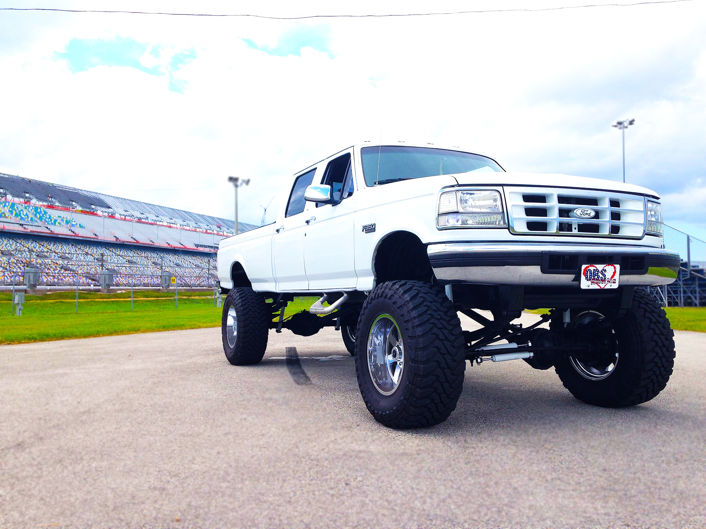

Henry was built with the greatest diesel motor ever made - the 7.3 liter International Harvester Turbo Diesel. When I bought Henry he had over 300,000 miles on him, was stock and the cab had about 3" thick of dirt under the vinyl flooring because he was a hard working truck. I could (should) have left Henry stock, but I spent a year rebuilding him. Once I did all the mods listed below I would put the chip to performance mode all the time and one day I blew Henry's motor up. This was one of my saddest days. I will never forget what it sounded like and what it smelled like (Chinese food). It was back to the drawing board, but this gave me the opportunity to put in a totally rebuilt 7.3 motor so it was almost like Henry had 0 miles on him. Over the year I learned a lot about diesel motors and was able to do some creative side projects (like make a wind chime out of his bent rods). The day I put Henry up for sale someone bought him. I didn't think he would go so soon especially for what I was asking, but it was time to move on because I spent all my free time researching and working on him. King Henry will always be my first love.
Stock Info
1995 Ford F-350 7.3L Turbodiesel / 4x4
Mods
- Stage 1 Injectors
- Wicked Wheel 2 Turbo
- 5 Position Chip with Tunes
- 5" Exhaust to 10" Stack
- 8" Suspension Lift
- 40" Toyos with 20" Moto Metals